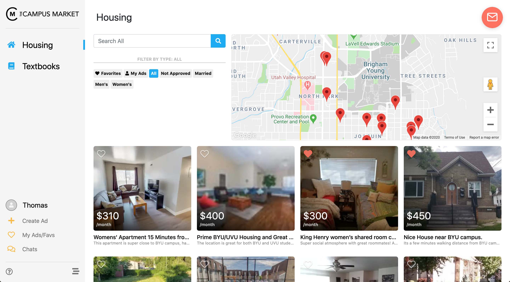

The Campus Market
August 13th, 2019

What was it?
The Campus Market was an online marketplace tailored to BYU and UVU students looking to buy and selling housing contracts. I built it along with two friends that I'd known since elementary school, Joe Wesemann and Spencer Dixon, who also worked with me to build RentSoft.
Why did we build it?
In the Fall of 2017, I was in California doing an internship with Tesla. I'd be going back to BYU in January and needed to find an apartment to live in. Unfortunately for me, BYU has a unique relationship with student housing; all undergraduate students are required to live in an apartment that is approved by the university. Because of this, it is notoriously difficult to find a place to live in the middle of the school year.

Scrolling through my Facebook feed was the best option for finding housing during the school year.
I was dismayed to discover that the best way to find a suitable apartment was by scrolling endlessly through Facebook pages dedicated to BYU housing (of which there are many). The University didn't facilitate any way for students to buy or sell their contracts, and the unique housing requirements meant that other online marketplaces weren't tailored to students' needs and therefore couldn't create a good user experience (like filtering by men's housing or women's housing). Eventually, I found someone selling, but after going through that painful process I decided to do something about it.
When I got back to school I found myself in a web development class that required an end of semester project. I took that as an opportunity to build a proof of concept classifieds website tailored to BYU students. I called it Briggslist (a play on Brigham and Craigslist) and boy was it ugly - just take a look.

The Brigglist login page was the only decent looking part of the entire site. It was the most reliable part too.

The home page displayed all items for sale (ignore the category and price filters, I never made those funcitonal).
The item details page was pretty lame except for the semi-functioning chat feature. I didn't want students posting their phone numbers so I implemented a chat feature between sellers and potential buyers. It worked some of the time which was good enough for me.
So yeah... I never really wanted to be a web designer/front-end engineer anyway. But enough people liked the idea of Brigglist that I decided to take the next step. I called Joe and Spencer, pitched my idea, and The Campus Market was born.
What did it do?
Student Verification
To ensure that only students were using our site (and to prevent an onslaught of bots) we required new users to sign up with an .edu email address and then activate their account with an email sent to the provided university email. Without signing up users could still view listings but couldn't access any other features.
To register for an account, a user was required to signup with an .edu email account that they owned.
Tailored Functionality
We needed to draw users away from competitors that had the advantage of a massive user base (something that is critical to a successful marketplace). One of the ways we encouraged users to switch to us was by making it easy and fast to post on our app while also providing a much more tailored experience than any of the other competitors (i.e. Facebook groups, KSL Classifieds, Craigslist). We even would cross-post ads from our platform to our competitor's marketplaces if the user opted-in. That way they had the convenience of using our tailored platform while also ensuring their ad was seen by as many people as possible.

You could easily search by men's or women's approved housing, and even search by location via the map.

Before finalizing their listing, a user could choose to have our listing assistant named Jarvis post their ad on other marketplaces to ensure maximum exposure.
Privacy
We wanted to create a safe way for students to communicate and meet with each other. Rather than displaying user emails or phone numbers on our listings (something we actively stopped), we built chat functionality into the app so our users could communicate without needing to give away any private contact information.

Users would receive in-app notifications when someone sent them a message. They could also opt-in to receive text and/or email notifications to ensure they never missed a message
Mobile App
In the last semester of my graduate program I decided to build a mobile app for my capstone. With the help of a classmate, Alex Campbell, we built Android and iOS mobile apps using Google Flutter that complimented the live web app. We never launched on any app stores but learning Flutter while it was still in its infancy was a fantastic experience.
The iOS and Android mobile apps had the same functionality as the web application, but with the added convenience of mobile notifications and being able to take pictures of your apartment or textbook and list them for sale within the app.
How did it go?
That depends on how you define success.
Did we become millionaires? No.
Did we get thousands of users overnight? No.
Did people see me on campus and say "Hey! You're the guy that built that cool tool that helped me sell my contract!"? No.
... But building a site from the bottom up that had a lot of cool features and where we had to support real users taught me more than any class ever had. At its peak, The Campus Market had about 200 active users and over 300 listings. We won an I-CORPS grant and were given a few thousand dollars to do usability testing, we were accepted into the Google Cloud for Startups program and given a few thousand to cover the hosting costs, we were awarded Best Overall Capstone Project, and we received 1st Place in the BYU Mobile App Competition. In my opinion, I'd call that a success.
In the end, we pulled the plug simply because we had lost interest. We had learned so much but after a year and a half, we were ready to move on and try something new. To all of the users of The Campus Market, thank you for your support!
Let's Get In Touch!
Send me an email or reach out on LinkedIn and I will get back to you as soon as possible!